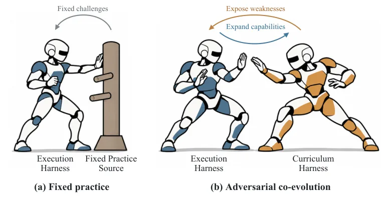
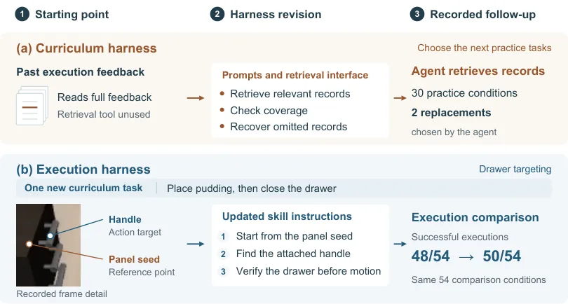

RoboACE：让“练什么”和“怎么执行”一起演化，权重保持冻结
RoboACE: Adversarial Co-Evolution for Robot Self-Improvement
一句话：不训练任何权重，仅靠“课程 + 执行”两套可修订软件交替演化，就能把 LIBERO-PRO 从 59% 推到 74%；但这是单条开发轨迹的累计结果，无法归因到某个模块。
LIBERO gain
LIBERO-PRO success
trained weights
作者、单位与技术谱系 · Research context
作者与单位
研究脉络
合作网络
- MMLab @ SIATMMLab @ SIAT（中国科学院深圳先进技术研究院） → Delin Zhao、Zhengrong Yue、Junlin He、Yali Wang关系：共同署名（同一实验室）[arXiv 摘要页]
- 本文 ↔ 官方代码仓本文 → github.com/DeLin1001/RoboACE关系：官方代码（可访问）[GitHub 仓库]
- 本文 ↔ π0.5 控制器本文 → π0.5（Physical Intelligence）关系：技术依赖（冻结控制器）[论文 §4.2]
作者、共同一作与通讯作者标记、实验室署名与代码仓均来自论文首页与正文；π0.5 仅为技术依赖。论文未披露作者之间的指导关系细节，本文不据共同署名推断师生关系。
方法本质拆解 · What actually changed
是不是微调？
完全不是微调：论文明确写 “no LLM or VLA weights were trained or fine-tuned”，π0.5 始终冻结。被“训练”的是外部优化器产出的提示、技能描述、工具接口与记忆文件，它们以版本化资产形式随部署共存。
有没有额外约束？
约束有三层：课程提议必须通过物理有效性与可达性检查，再由 Judge 校验指令-目标-场景一致；执行阶段任务定义、初始化、模型设置与预算全部冻结，只能改软件；每轮只允许一侧变更，另一侧固定为对照。
推理/后端到底做了什么？
部署时是一个独立 agent 在 harness 内做运行时决策：在代码技能与 VLA 控制之间选择，VLA 以 5 动作块连续执行，单回合预算 8000 控制步（20 Hz 下 6 分 40 秒）。没有额外的搜索、重规划求解或权重更新。
方法本质是什么？
本质是把“自我改进”从参数空间搬到软件空间：课程侧负责找当前能力的边界，执行侧负责把失败诊断固化成可复用的接口修订，交替更新保证比较公平。它没有做的是任何跨模拟器或实机的迁移验证，也没有模块级归因。
输入是能力档案与当前两侧 harness；改变的位置是课程选择程序与执行软件（提示/技能/工具/记忆）；约束动作是交替固定一侧 + admission 校验 + 固定快照比较；直接效果是冻结权重下四个面板全面提升。

桥接价值Bridge
桥接价值
这篇的主语不是模型而是“围绕模型的软件”：提示、技能描述、工具接口、可读记忆。它证明在权重冻结的前提下，光改这些层就能带来十几个点的跨基准提升。对我们的启发是：实验流水线、评测脚本、失败诊断记录本身也是可演化的对象，而且比改模型更容易做严格对照。
方法与模块Method
方法摘要
两侧 harness 交替更新：课程侧读能力档案 P_k，保留/替换/新增练习条件，经物理有效性与 Judge 一致性检查后冻结成任务快照 T_k；执行侧先在 T_k 上测当前部署，再测候选修订，按成功、回归、复用与成本决定是否采纳。执行结果经 Experience Consolidator 压成 P_{k+1}，只把任务级结论回传给课程侧，原始轨迹与隐藏几何留在执行侧；Strategic Advisor 低频审查长历史，只提方向不装修订。
可迁移模块
（1）交替固定一侧的比较协议：课程固定时比较执行修订，执行固定时比较课程提议，避免两个变量同时动。（2）admission 双重校验：先物理有效性与可达性，再由 Judge 检查指令/目标/场景一致性，不预筛难度。（3）能力档案作为证据压缩接口：把“已证明能力/未解决缺口/不确定性”写成结构化摘要，这正好可以套在我们的实验日志到周报的转换上。

证据Evidence
关键证据与数字
四个面板各 200 条件：LIBERO 63.5→99.0（+35.5）、LIBERO-Plus 64.5→94.5（+30.0）、LIBERO-PRO 59.0→74.0（+15.0）、LIBERO-X 19.5→30.5（+11.0）。同一 π0.5 控制器单独跑为 96.9 / 92.0 / 60.5 / 11.5，因此在 PRO 与 X 上分别落后 13.5 与 19.0 点。对照的最强 agent 系统VoLo 为 97.5 / 90.0 / 60.5 / 10.0。开发规模：30 个练习条件、内部基准 ≤40 条件、27 条回合记录，使用 GPT-6.1 (Terra)、SAM 3 与 π0.5，未训练任何 LLM/VLA 权重。
边界与下一步Limits & Next Step
边界与风险
作者明确说这是单条开发轨迹的结果，跨独立 campaign、更广环境与实机的行为尚未建立；四个 panel 各自 200 条件，不等于官方完整协议；评测用环境原生 predicate，超时与基础设施错误都计失败。风险在于“累计修订”无法拆成单模块贡献，且开发阶段用 LIBERO 条件、评测用 LIBERO-Plus/PRO/X，仍属同一模拟器家族。另需注意 LLM 版本（GPT-6.1 Terra）会随时间变化，复现条件脆弱。
下一步实验
一，把交替固定一侧的协议搬到我们自己的实验编排：固定数据/评测，比较流水线修订；二，给能力档案做一个最小版本（成功/失败/未覆盖三类），看它能否替代人工周报里的状态汇总；三，若要做模块归因，需要设计“只改课程”和“只改执行”的两组消融，这是原文没有做的。